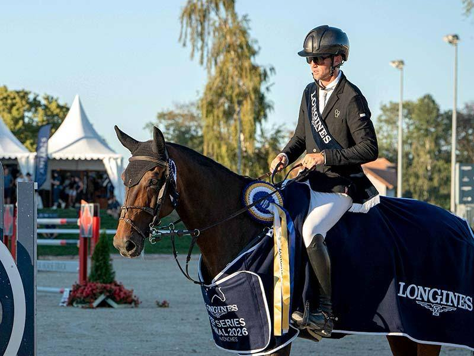

Oliver Fletcher y Hello William conquistan el Gran Premio del CSIO4* de Avenches
El jinete británico Oliver Fletcher se adjudicó el Longines Grand Prix del CSIO4* de Avenches, prueba grande del programa suizo enmarcado en la Final de la Longines EEF Series.

El jinete británico Oliver Fletcher se adjudicó el Longines Grand Prix del CSIO4* de Avenches, prueba grande del programa suizo enmarcado en la Final de la Longines EEF Series. Con "Hello William" firmó un desempate impecable a cero faltas y detuvo el crono en 39,80 segundos, un tiempo suficiente para dejar atrás a un cierre de podio de máximo nivel.
La segunda plaza fue para el neerlandés Marc Houtzager con "Mereusa", también sin derribos en el desempate y con 40,55 segundos, apenas siete décimas por encima del ganador. Cerró el podio la británica Holly Smith, que con "Nike van het Singraven" completó el recorrido decisivo en 40,63 segundos, si bien un derribo la relegó al tercer escalón pese a haber firmado el crono más rápido del jump-off. El baremo, disputado sobre alturas de 1,55 m, dejó una pelea muy ajustada en el corte final y confirmó el buen nivel deportivo con el que la EEF Series ha llegado a su final de temporada.
La prueba puntúa para el Longines Ranking y añade un nuevo hito a la trayectoria de Fletcher, que consolida su presencia en el circuito de cinco estrellas europeo justo antes del cierre del calendario internacional de otoño. Para el conjunto suizo, la cita en Avenches funciona además como escaparate previo a las decisiones federativas de cara a los grandes objetivos del próximo curso.
— Redacción de Hípica al Día